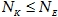

|

Cite as: “R.D. Pascual-Marqui: Discrete, 3D distributed, linear imaging methods of electric neuronal activity. Part 1: exact, zero
error localization. arXiv:0710.3341 [math-ph], 2007-October-17, http://arxiv.org/pdf/0710.3341 ”
Page 14 of 16
reference constant).
If the data so happens to be insufficient, i.e.
, or the data
happens to be almost deterministic, resulting in a low rank matrix C, then the method will
not have exact, zero error localization.
Eq. 62
corresponds to a single example illustrating the “adaptive” character of this
family of methods. Any data dependent matrix C
can be used, such as, for example, the
squared inverse covariance matrix for the measurements.
Rigorously
speaking, this method is not linear because the transformation depends
on the data on which imaging is being carried out.
9.
Conclusions
In Pascual-Marqui (1995, 1999, and 2002), the following arguments were used for
selecting the best discrete, 3D distributed, linear tomography:
1. The aim of functional imaging is localization. Therefore, the best tomography is the one
with minimum localization error.
2. In a linear tomography, the localization properties can be determined by using point-test
sources, based on the principles of linearity and superposition.
3. If a linear tomography is incapable of zero error localization to point-test sources that are
active one at a time, then the tomography will certainly be incapable of zero error
localization to two or more simultaneously active sources.
Here we present a
general family of linear imaging methods
with exact, zero error
localization to point-test sources.
We show that one particular member of this family, sLORETA (Pascual-Marqui 2002)
has no localization bias in the presence of measurement noise and biological noise.
We introduce a new particular member of this family, denoted eLORETA. This is a
genuine inverse solution and not merely a linear imaging method. We show that it has
exact, zero error localization in the presence of measurement and structured biological
noise.
We derive and construct the method using two different approaches, and give
practical algorithms for its estimation.
We present a general family of quasi-linear imaging methods that are data-dependent
(adaptive).
We also show that they are endowed with the exact, zero error localization
property.
These results are expected to be of value to the EEG/MEG neuroimaging community.